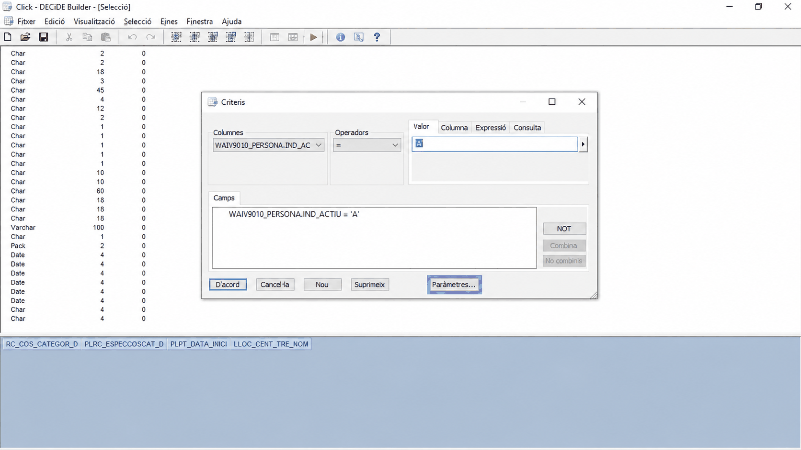
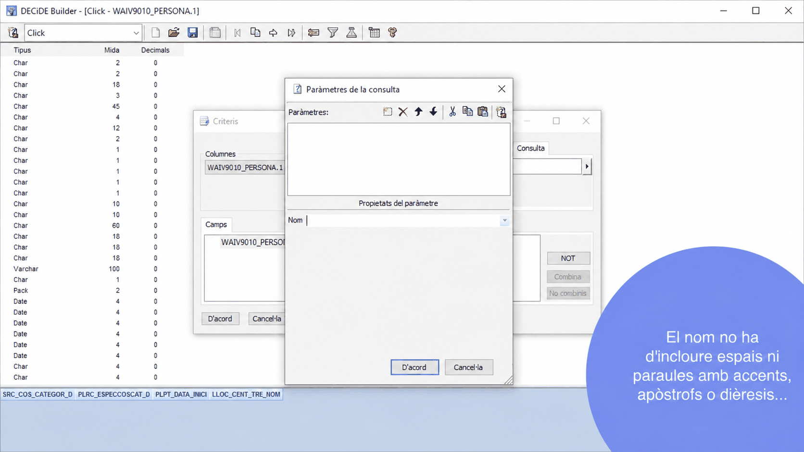
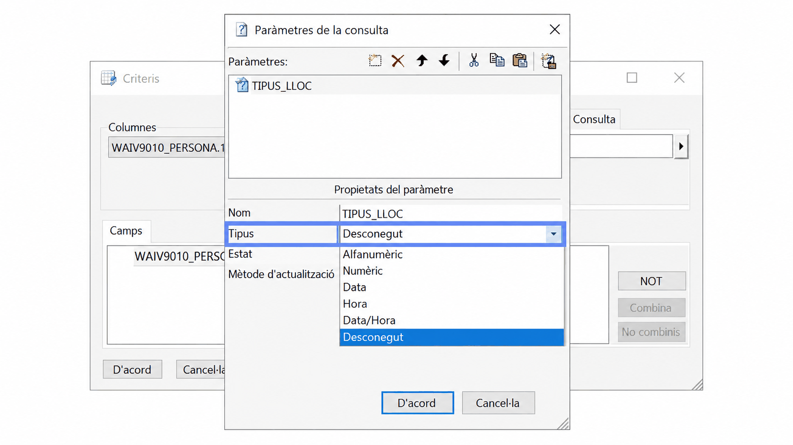
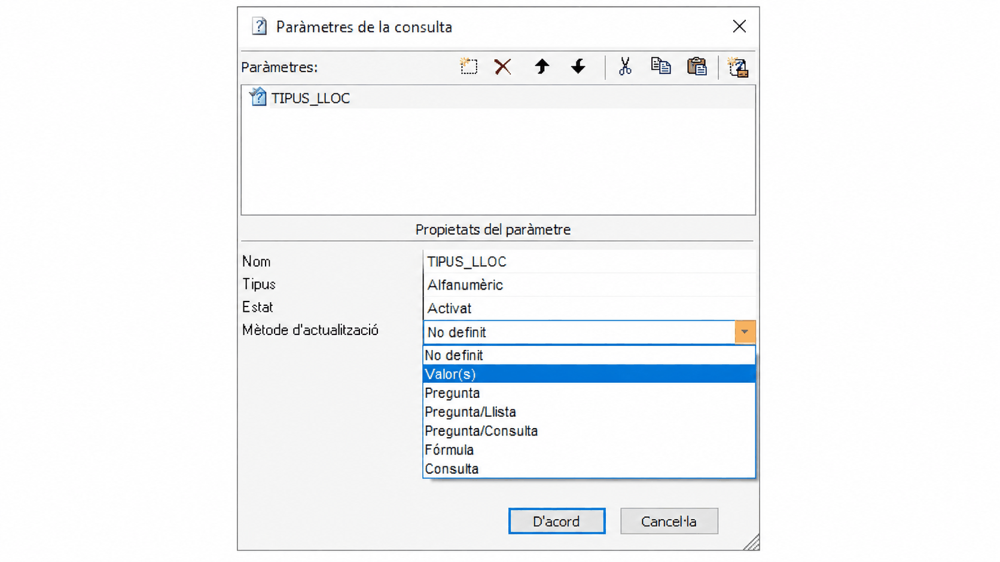
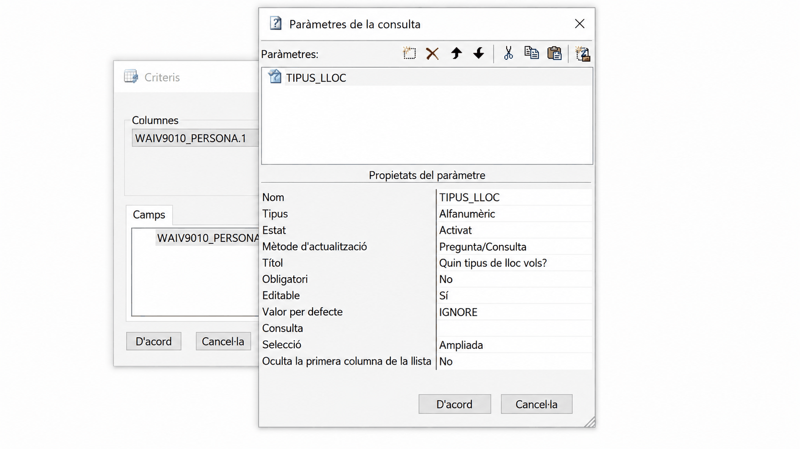
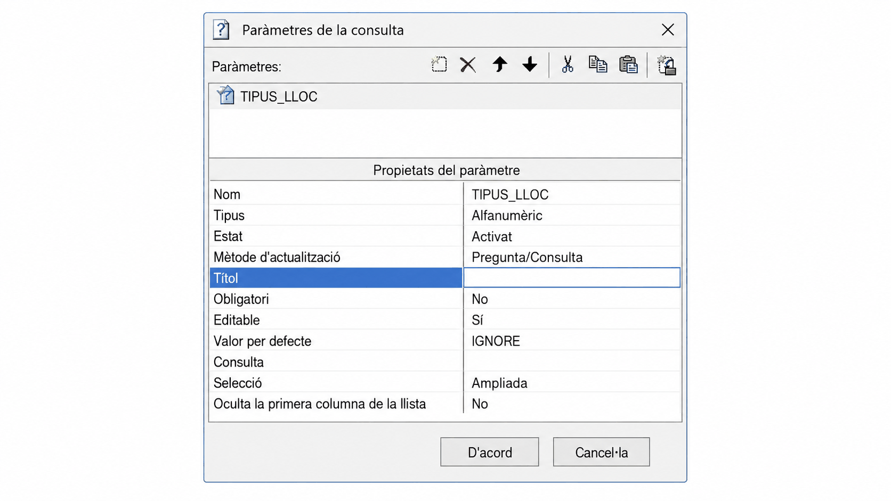
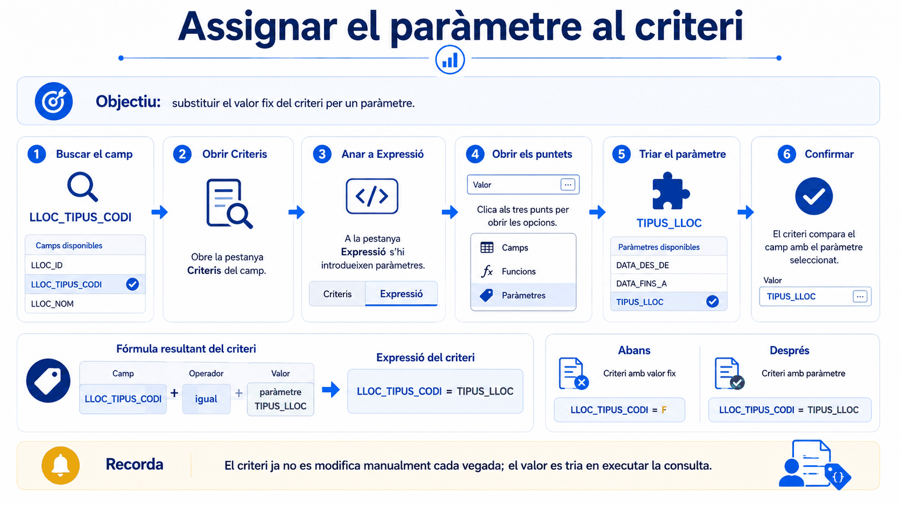
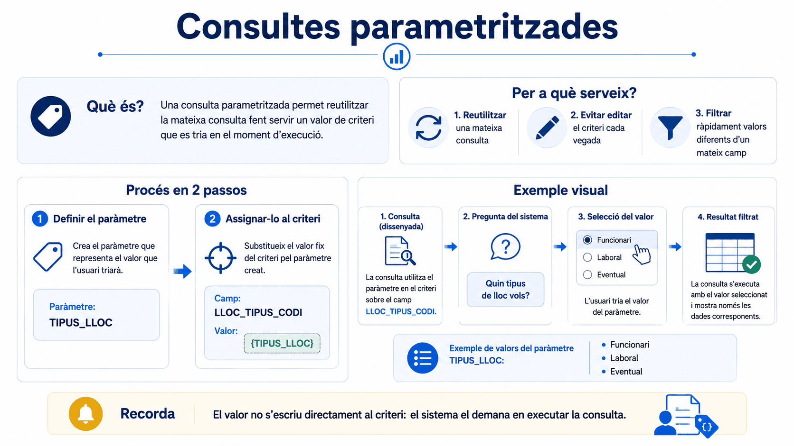

Apartat 1Per què un paràmetre
Penseu en la consulta de la unitat 6: personal amb vincle
I. Cada vegada que algú vol veure els laborals temporals cal
entrar a la consulta, obrir els criteris, canviar la I per una
M i executar. Ho ha de fer algú que sàpiga on és tot això, i
cada canvi és una ocasió de trencar la consulta.
Amb un paràmetre, la consulta pregunta el valor en el moment d'executar-la. Qui la fa servir tria d'una llista i no toca res.
Crear un paràmetre són sempre dues coses, i és molt habitual fer-ne només una i pensar que està trencat:
- Definir el paràmetre: com es diu, què pregunta i d'on treu les opcions.
- Assignar-lo a un criteri: dir a quin camp s'aplica.
Un paràmetre definit i no assignat no fa absolutament res. No dóna cap error: simplement la consulta s'executa com sempre.
Apartat 2El requisit previ
Perquè el paràmetre ofereixi un desplegable amb els valors reals, abans cal tenir una consulta que els llisti. I aquesta consulta ja sabeu fer-la: és exactament la de la unitat 11.
TIPUS_LLOC
Al material oficial aquesta consulta auxiliar es diu TIPUS_LLOC
i conté els codis i descripcions dels tipus de lloc. Feu-la primer: sense
ella, el paràmetre no té d'on treure les opcions.
Apartat 3La finestra de paràmetres
Els paràmetres no tenen menú propi: viuen dins de la finestra Criteris, al botó Paràmetres... de la part inferior.

S'obre la finestra Paràmetres de la consulta, dividida en dues zones: a dalt la llista de paràmetres amb una barra d'icones, i a baix les propietats del que tingueu seleccionat.

Serveix per crear i esborrar paràmetres, moure'ls amunt i avall, i retallar, copiar i enganxar. Aquestes tres últimes són més útils del que sembla: permeten reaprofitar paràmetres ja creats en altres consultes en comptes de tornar-los a definir des de zero.
Apartat 4Nom i tipus
Nom
És el primer que demana. Ha de ser identificatiu, i té una restricció que cal respectar:
El nom no pot incloure espais, ni paraules amb accents, apòstrofs o
dièresis. Feu servir majúscules i guions baixos:
TIPUS_LLOC, inici_periode.
Tipus
Determina quina mena de valor esperarà. Per defecte surt Desconegut, que cal canviar.

| Tipus | Quan |
|---|---|
| Alfanumèric | Quan hi ha lletres, o lletres i números. És el cas dels codis. |
| Numèric | Quan només hi ha nombres. |
| Data | Per a dates. És tota la unitat 17. |
| Hora | Per a hores. |
| Data/Hora | Per a les dues coses alhora. |
| Desconegut | El valor per defecte. Canvieu-lo. |
Estat
Es deixa a Activat. Si esteu creant el paràmetre, és perquè voleu que funcioni.
Apartat 5El mètode d'actualització
És la propietat que decideix d'on surten els valors, i per tant la més important de totes.

| Mètode | Què fa | Ús |
|---|---|---|
| No definit | El valor per defecte en crear-lo. | Cal canviar-lo. |
| Valor(s) | El paràmetre té valors fixos. | No té sentit: si feu un paràmetre és precisament per poder triar. |
| Pregunta | Pregunta i l'usuari escriu el valor, o diversos separats per punt i coma. | Útil si ja sabeu els valors i no cal desplegable. |
| Pregunta/Llista | Presenta una llista de valors definits en un fitxer de text amb extensió .lst. |
Poc habitual: obliga a mantenir un fitxer a part. |
| Pregunta/Consulta | Presenta els valors que torna una altra consulta ja creada. | El més utilitzat. És el que farem servir. |
| Fórmula | El valor surt d'una fórmula. | Avançat. |
| Consulta | El valor surt d'una consulta, però sense preguntar res. | Avançat. |
Perquè els valors surten de la base de dades i s'actualitzen sols. Si demà apareix un tipus de lloc nou, el desplegable el mostrarà sense que ningú toqui res. Amb Pregunta/Llista caldria editar el fitxer, i amb Pregunta l'usuari s'ha de saber els codis de memòria.
Apartat 6La resta de propietats
En triar el mètode apareixen la resta. Aquesta és la finestra completa amb l'exemple ja omplert:

| Propietat | Valor | Per què |
|---|---|---|
| Títol | Quin tipus de lloc vols? | És la pregunta que veurà l'usuari. Escriviu-la com una pregunta de veritat, no com un nom de camp. |
| Obligatori | No |
Així, si no es tria res, la consulta torna totes les opcions en comptes de fallar. |
| Editable | No |
Impedeix que s'escrigui un valor a mà, que és per on entren les errades. |
| Valor per defecte | IGNORE |
Ja hi surt. Vol dir "si no es tria res, no apliquis aquest criteri". |
| Consulta | TIPUS_LLOC |
La consulta auxiliar de l'apartat 2, d'on surten les opcions. |
| Selecció | Ampliada | Vegeu l'apartat següent. |
| Oculta la primera columna de la llista | No |
Serveix per amagar la columna del codi si només voleu que es vegi la descripció. |

Amb Obligatori a No i
Valor per defecte a IGNORE, qui executi
la consulta pot no triar res i obtenir-ho tot. És el comportament que voleu
en la majoria de casos: el paràmetre acota si es fa servir, i no molesta si
no.
Apartat 7Els quatre tipus de selecció
Determina quantes opcions pot triar l'usuari al desplegable.
| Opció | Permet triar |
|---|---|
| Tots | Tots els valors alhora. |
| Simple | Només un valor. |
| Múltiple | Un bloc de valors, però han d'anar seguits. |
| Ampliada | Els que vulgueu, encara que estiguin saltejats, amb Ctrl. |
Perquè inclou les altres: amb Ampliada es pot triar un sol valor, com a Simple, o un bloc seguit, com a Múltiple, i a més valors alterns. No hi ha cap motiu per limitar-ho.
Apartat 8Assignar-lo al criteri
Aquí és on molta gent es queda. El paràmetre existeix, però encara no està connectat a cap camp. Premeu D'acord per tornar a la finestra de criteris.
-
Trieu el camp i l'operador
Al desplegable Columnes, el camp sobre el qual s'aplicarà:
LLOC_TIPUS_CODI. L'operador,=. -
Canvieu de pestanya
En comptes d'escriure a Valor, aneu a la pestanya Expressió. Aquesta és la pestanya que vam anunciar a la unitat 6 i que fins ara no havíem fet servir.
-
Obriu el generador
Feu clic al botó dels tres punts. S'obre una finestra amb tres opcions: Camps, Funcions i Paràmetres.
-
Trieu el paràmetre
Entreu a Paràmetres, feu doble clic sobre
TIPUS_LLOCi veureu que passa a la caixa de Fórmula de baix. D'acord.

Apartat 9Executar-la
En prémer executar, la consulta ja no mostra les dades directament. Primer surt una finestra amb la pregunta que vau escriure al títol i la llista de valors.
- Es tria un valor, o diversos amb Ctrl si són saltejats.
- Es prem el vistiplau i després OK.
- La consulta s'executa amb la selecció feta.

La consulta ja no és vostra: la pot fer servir qualsevol persona del servei sense saber què és un criteri, sense obrir la definició i sense risc de trencar-la. I si demà hi ha un tipus de lloc nou, el desplegable el mostrarà sol.
Apartat 10Errors freqüents
El que passa
Executo i no em pregunta res.
El desplegable surt buit.
No em deixa posar el nom.
Només puc triar valors seguits.
Si no trio res, no surt cap registre.
El que passa de veritat
El paràmetre està definit però no assignat a cap criteri. És l'error número u.
La consulta auxiliar no existeix, està buida, o no l'heu indicada a la propietat Consulta.
Hi heu posat espais, accents, apòstrofs o dièresis.
Teniu Selecció a Múltiple. Poseu-la a Ampliada.
Obligatori està a Sí, o heu esborrat el IGNORE.
Apartat 11Exercicis
La consulta que pregunta
ReprodueixFeu-ho sencer, en aquest ordre:
-
Creeu la consulta auxiliar de registres únics amb els codis i
descripcions de tipus de lloc, i deseu-la com a
TIPUS_LLOC. -
A la consulta principal sobre LLOC, definiu
un paràmetre alfanumèric amb mètode
Pregunta/Consulta, títol
Quin tipus de lloc vols?, no obligatori, no editable, valor per
defecte
IGNORE, consultaTIPUS_LLOCi selecció Ampliada. - Assigneu-lo al criteri sobre el camp de tipus de lloc.
- Executeu i trieu un valor.
Comprovació
Ha de sortir la finestra amb la pregunta i la llista de tipus. Si no surt, teniu el paràmetre definit però no assignat: torneu a l'apartat 8.
Executeu-la dues vegades triant valors diferents i comproveu que el nombre de registres canvia. Aquesta és la prova que el paràmetre està connectat de veritat.
Trenca les tres propietats
TrencaAmb el paràmetre ja funcionant, feu aquests tres canvis, un per un, i executeu després de cadascun:
- Poseu Selecció a Simple.
- Poseu Obligatori a
Síi no trieu res. - Esborreu el
IGNOREdel valor per defecte i no trieu res.
Què hauria d'haver passat
1. Ja no podeu triar més d'un valor. Amb Múltiple podríeu, però només seguits. Per això la recomanació és sempre Ampliada.
2. No us deixa continuar sense triar. De vegades és el que voleu, però normalment no.
3. Sense IGNORE, no triar res deixa de
voler dir "totes" i la consulta no torna el que esperàveu. Recordeu
aquest comportament: a la unitat 17 el IGNORE s'ha
d'esborrar a propòsit, i és l'única vegada.
Una consulta per a tot el servei
ResolAl vostre servei tothom demana el mateix llistat de persones, però cadascú per un vincle diferent. Us cansa fer-lo i que us el tornin a demanar.
Munteu una consulta que qualsevol pugui executar triant el vincle, sense tocar-ne l'estructura. Digueu quines dues consultes necessiteu i què va a cada propietat.
Solució
Consulta auxiliar, per alimentar el desplegable:
Paràmetre a la consulta principal:
Assignació, a la pestanya Expressió:
Amb la descripció també a la consulta auxiliar, el desplegable mostra
F - Funcionari en comptes de només F, i qui
l'executi no ha de saber cap codi. Si volguéssiu amagar el codi i que
només es veiés la descripció, és per a això que serveix
Oculta la primera columna de la llista.
Apartat 12Llista de comprovació
- Explicar què guanya una consulta en tenir un paràmetre.
- Enunciar els dos passos i saber què passa si només se'n fa un.
- Crear la consulta auxiliar de registres únics que alimenta el desplegable.
- Trobar el botó Paràmetres... dins de la finestra de criteris.
- Respectar la restricció del nom.
- Triar el tipus adequat entre els sis disponibles.
- Explicar els set mètodes d'actualització i per què Pregunta/Consulta és el bo.
- Omplir títol, obligatori, editable, valor per defecte i consulta.
- Explicar com treballen junts Obligatori i
IGNORE. - Justificar per què Selecció sempre va a Ampliada.
- Assignar el paràmetre a un criteri per la pestanya Expressió.
- Diagnosticar una consulta que no pregunta res.
- Reaprofitar un paràmetre d'una altra consulta amb copiar i enganxar.
Els paràmetres de data funcionen gairebé igual, però tenen una diferència que els fa fallar a tothom la primera vegada. És una unitat curta i val la pena llegir-la sencera abans de crear-ne cap.